AWW Noord Holland
- Amsterdam UMC
- UNO Amsterdam
- Hogeschool van Amsterdam
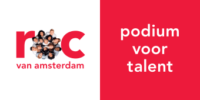
MBO College West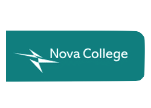
Nova College (MBO)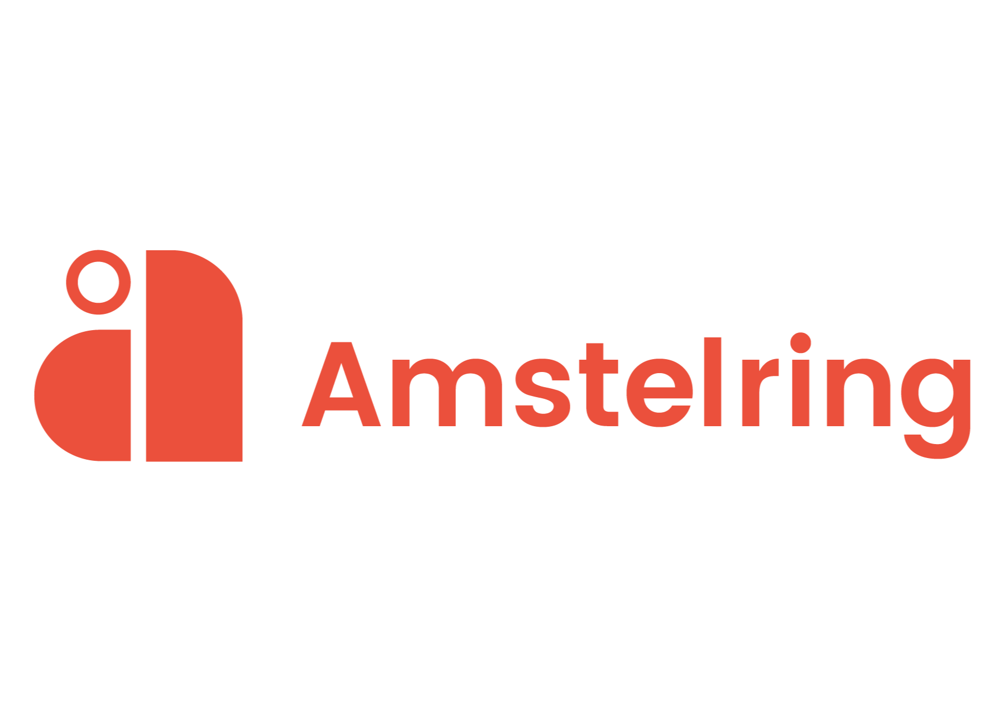
Amstelring- Cordaan
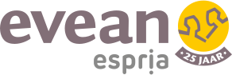
Evean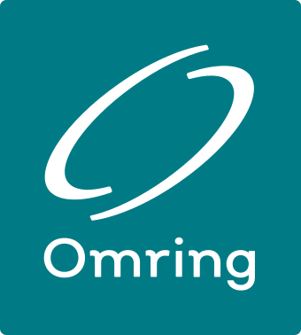
Omring
Organisatie
Vijf regionale Academische Werkplaatsen Wijkverpleging werken nauw samen met universiteiten, hogescholen, mbo-opleidingen en zorgorganisaties in hun regio.

MBO College West
Nova College (MBO)
Amstelring
Evean
Omring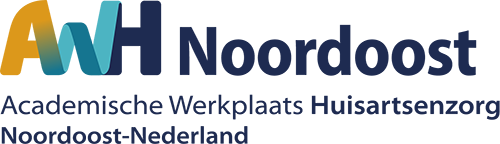
AWH-NO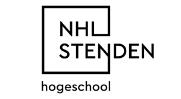
NHL Stenden Hogeschool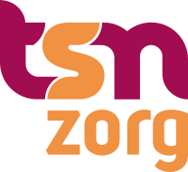
TSN Zorg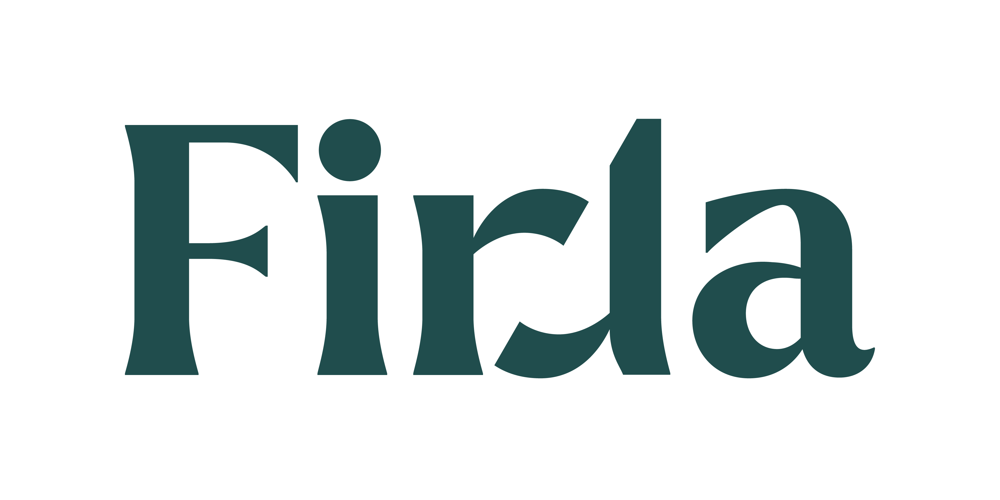
Firda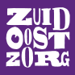
Zuidoostzorg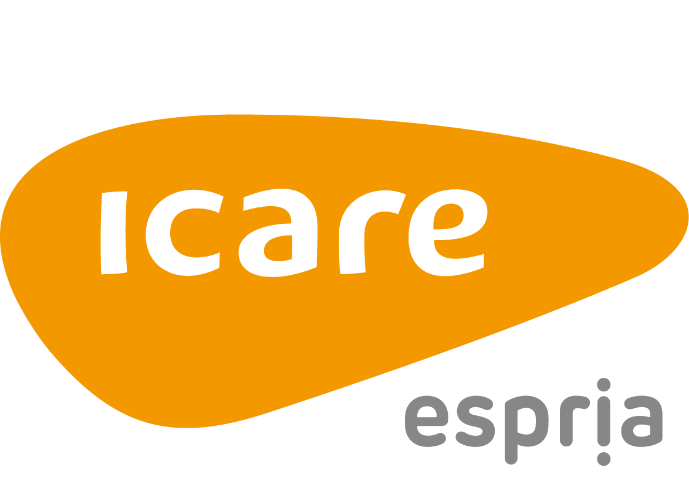
Icare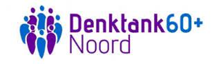
Denktank 60+ Noord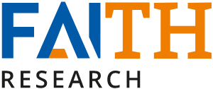
Faith Research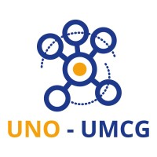
UNO UMCG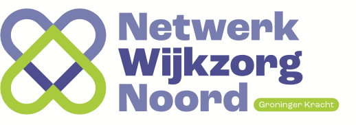
Netwerk Wijkzorg Noord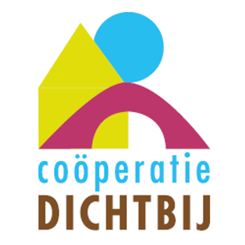
Coöperatie Dichtbij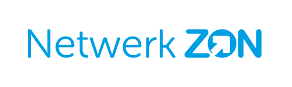
Netwerk ZON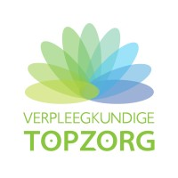
Verpleegkundige Topzorg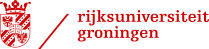
Rijksuniversiteit Groningen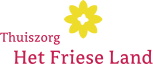
Thuiszorg het Friese Land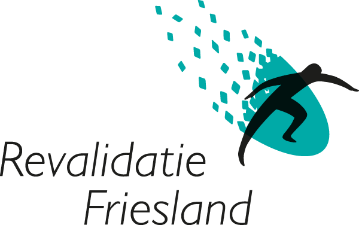
Revalidatie Friesland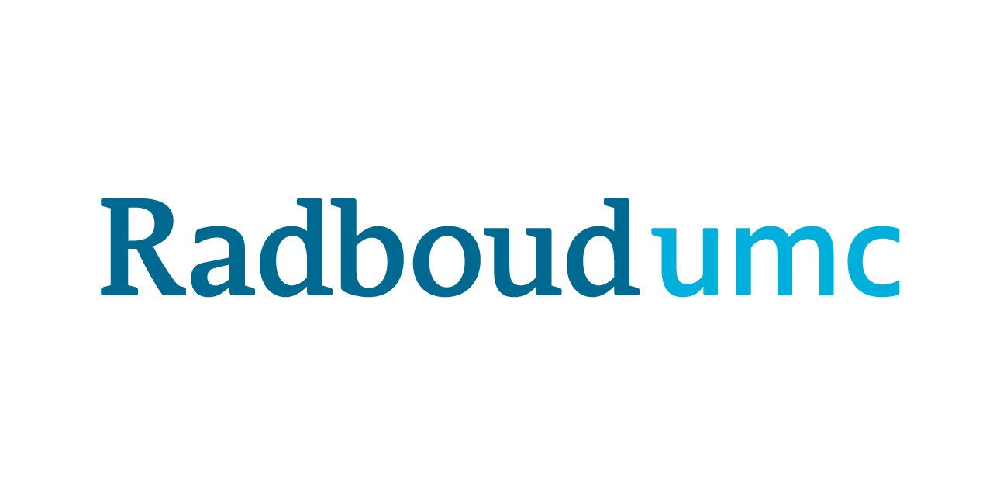
Radboudumc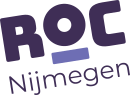
ROC Nijmegen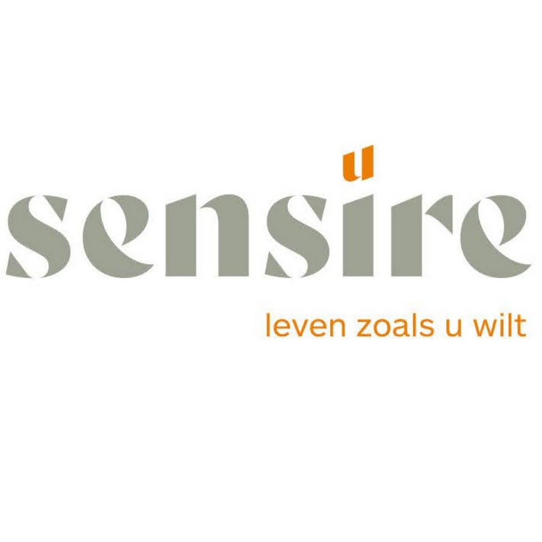
Sensire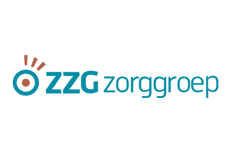
ZZG Zorggroep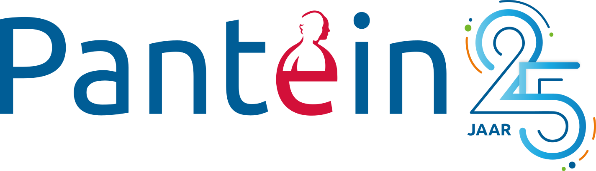
Pantein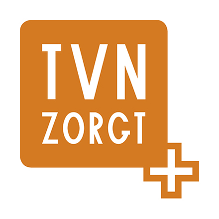
TVN zorgt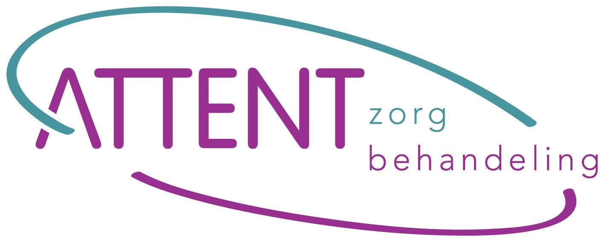
Attent Zorg en Behandeling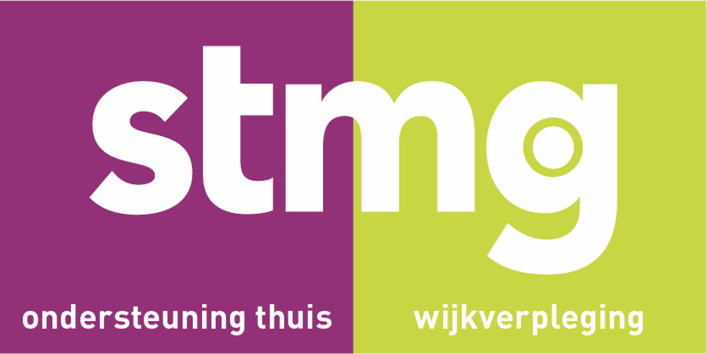
STMG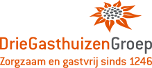
Driegasthuizengroep / Thuiszorg Groot Gelre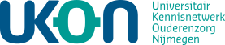
UKON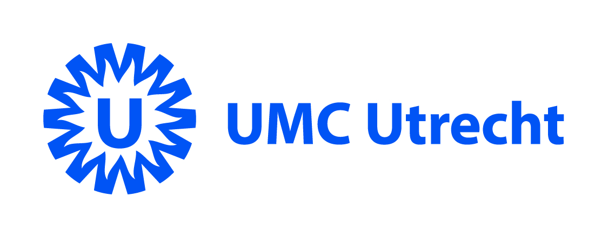
UMC Utrecht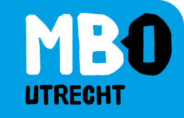
MBO Utrecht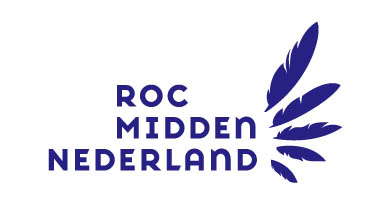
ROC Utrecht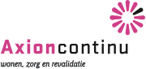
AxionContinu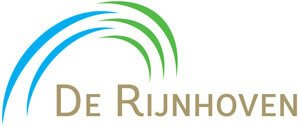
De Rijnhoven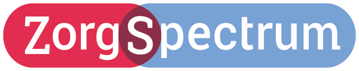
ZorgSpectrum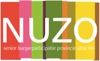
NUZO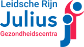
LRJG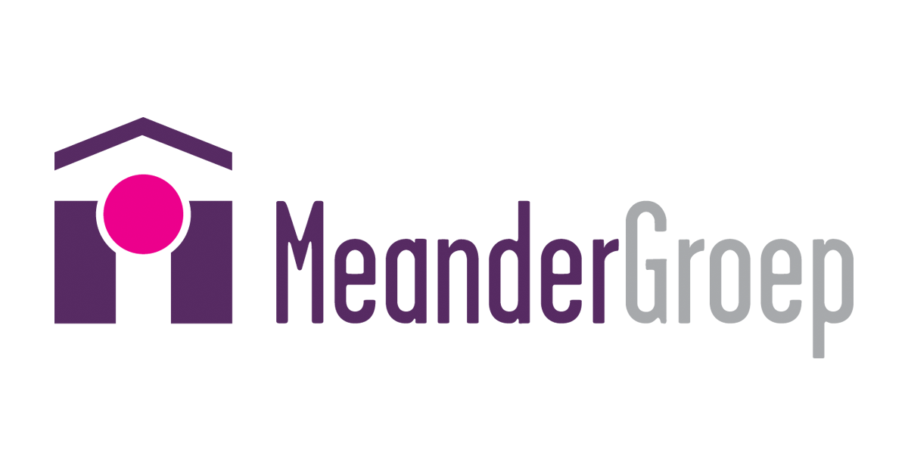
MeanderGroep Zuid-Limburg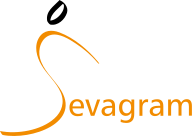
Sevagram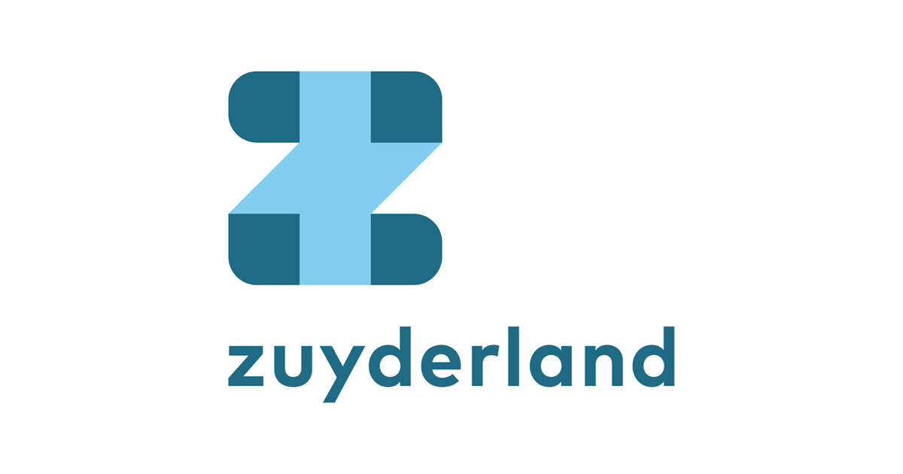
Zuyderland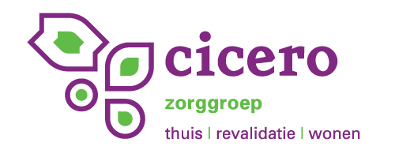
Cicero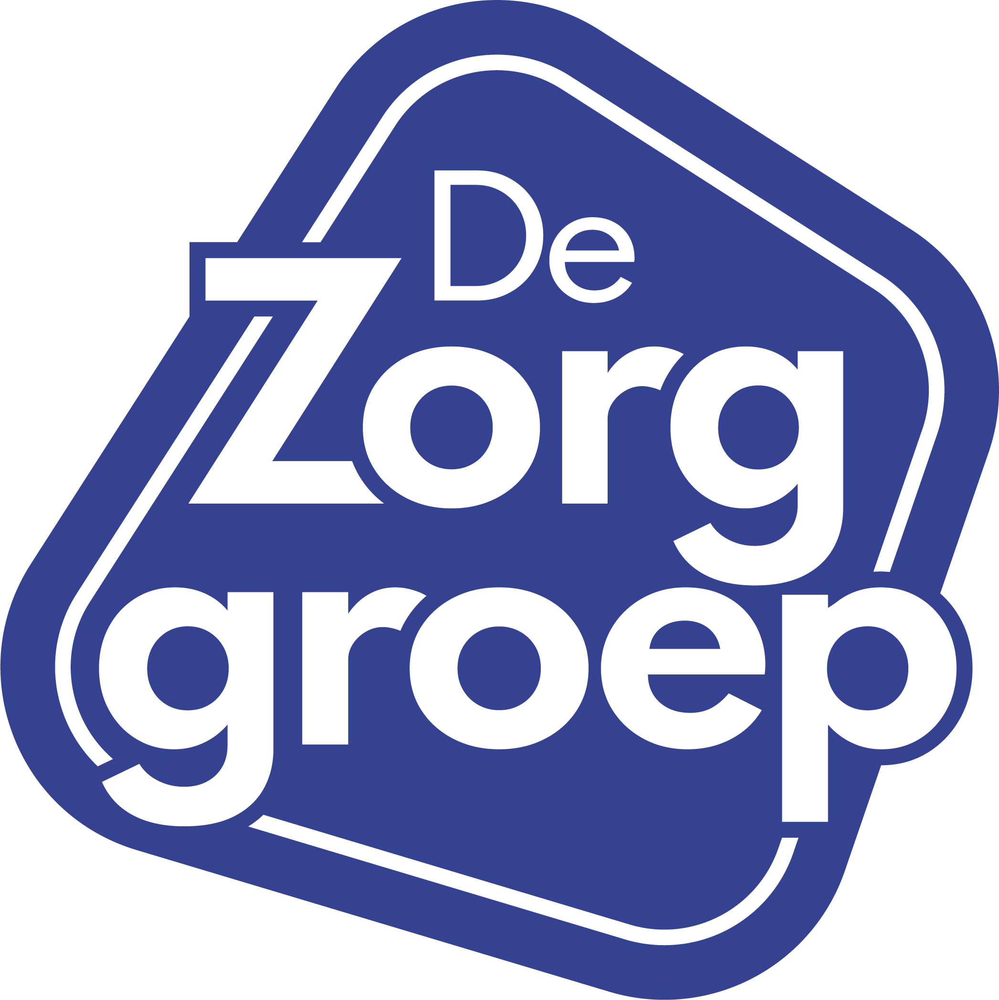
De Zorggroep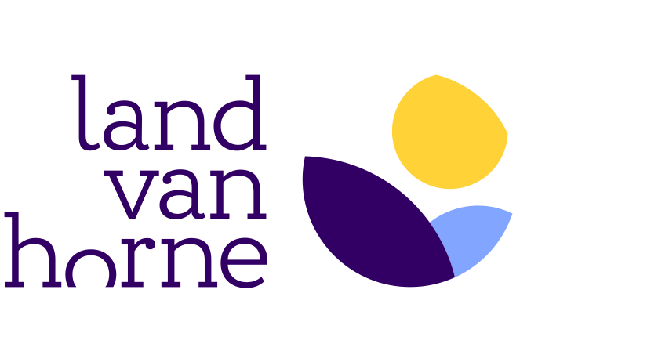
Land van Horne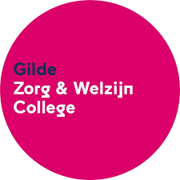
Gilde Zorgcollege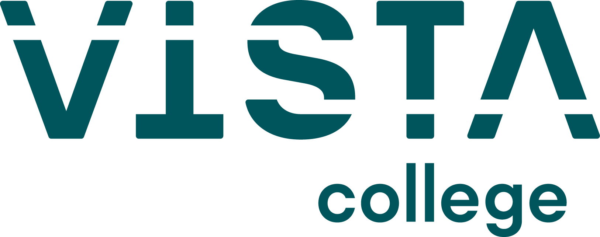
Vista College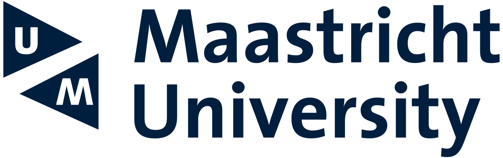
Maastricht University